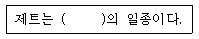
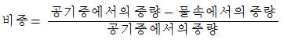
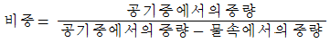
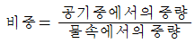
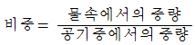

보석감정사(기능사) (2015-07-19 기출문제)
1과목: 보석학일반
1. 18K 이상의 고품위 금 합금을 시금석법으로 감별할 때 사용하는 시약으로 적합한 것은?
- 질산용액
- 왕수
- 황산용액
- 빙초산
(정답률: 68%)

2. 보석으로 사용되는 양질의 제이다이트가 산출되는 가장 대표적인 산지는?
- 브라질
- 스리랑카
- 나미비아
- 미얀마
(정답률: 74%)
3. 오닉스(Onyx)는 어떤 보석의 변종인가?
- 아게이트(Agate)
- 칼세도니(Chalcedony)
- 장석(Feldspar)
- 크리소베릴(Chrysoberyl)
(정답률: 65%)
4. 하나의 광물이 아니고 여러 가지 광물의 집합체인 보석은?
- 크리소프레이즈
- 로도크로사이트
- 라피스라줄리
- 칼사이트
(정답률: 84%)
5. 진주 관리에 관한 설명 중 잘못된 것은?
- 땀이 묻은 채로 보관하는 것은 바람직하지 않다.
- 전용 헝겊을 비치하여 닦는다.
- 산, 알칼리에 약하므로 주의를 한다.
- 물에 닦거나 베이비 오일을 발라둔다.
(정답률: 96%)
6. 보석과 조흔색의 연결로 틀린 것은?
- 산호 - 적색
- 라피스라줄리 - 청색
- 말라카이트 - 녹색
- 헤마타이트 - 적색
(정답률: 66%)
7. 상점에 진열된 은제품의 변색을 막기 위하여 보편적으로 사용하는 방법은?
- 투명한 비닐로 밀봉한다.
- 습기를 높인다.
- 가열한다.
- 유황을 가한다.
(정답률: 93%)
8. 학명에 따른 보석의 분류 중 군(group)으로 분류되는 것은?
- 베릴
- 커런덤
- 칼세도니
- 가닛
(정답률: 81%)
9. 목걸이 형태에서 진주의 크기가 일정한 크기로 배열된, 진주 목걸이 명칭은?
- 유니폼(Uniform)
- 스프랜더(Splender)
- 그래듀에이션(Graduation)
- 컨버터블(Convertible)
(정답률: 87%)
10. 공작석(Malachite)에 들어 있는 성분은?
- 탄산칼슘
- 탄산아연
- 탄산구리
- 탄산망간
(정답률: 70%)
11. 보석합성 방법 중 가장 높은 압력이 요구되는 합성법은?
- 스컬 용융법
- 플럭스법
- 열수법
- 플레임 퓨전법
(정답률: 60%)
12. 합성석에 대한 설명으로 옳은 것은?
- 천연에는 존재하지 않는 인공적으로 제조한 물질이다.
- 천연보석과 외견상 유사하나 물리적, 화학적 성질이 전혀 다른 물질이다.
- 천연보석과 화학성분, 결정구조, 물리적 성질이 거의 같거나 동일한 물질이다.
- 두 개 이상의 물질이 하나의 형태로 붙여진 물질이다.
(정답률: 91%)
13. 현미경으로도 구별할 수 없을 정도의 매우 미세한 결정의 조직을 무엇이라 하는가?
- 등립질
- 현정질
- 입상조직
- 은미정질
(정답률: 91%)
14. 방향에 따른 경도의 변화가 가장 현저한 보석은?
- 네프라이트
- 에메랄드
- 석영
- 카이아나이트
(정답률: 54%)
15. 대부분의 유색보석이 형성되는 곳은?
- 지구의 중심부 핵
- 지구의 멘틀층
- 지구의 대륙지각
- 지구의 해양지각
(정답률: 85%)
2과목: 다이아몬드감정법
16. 지르콘(Zircon)에 대한 설명으로 옳지 않은 것은?
- 패각상 단구를 보인다.
- 화학성분은 ZrSiO4이고, 정방정계 광물이다.
- 확대검사 시 말꼬리상 내포물을 관찰할 수 있다.
- 지르콘은 OTL보석이며, 653.5nm에 흡수라인이 나타난다.
(정답률: 75%)
17. 다음 ( )안에 내용으로 옳은 것은?

- 유리
- 갈탄
- 산호
- 플라스틱
(정답률: 91%)
18. 보석과 그 보석의 특징적인 내포물의 연결이 옳은 것은?
- 에메랄드-삼상 내포물
- 상아-색대
- 호박-연꽃잎 모양의 내포물
- 네프라이트-썬 스팽글
(정답률: 77%)
19. 다이아몬드의 중량을 추정할 때 길이 대 폭의 비율에 의한 조정계수가 필요한 형태는?
- 하트 셰이프
- 오벌 브릴리언트
- 라운드 브릴리언트
- 페어 세이프
(정답률: 62%)
20. 다이아몬드의 컬러 그레이딩을 하고자 한다. 일반적으로 팬시 컬러가 아닌 경우, 다이아몬드의 어느 부분을 통하여 색을 비교하는 것이 좋은가?
- 테이블에 수직방향으로
- 퍼빌리언에 수직방향으로
- 큐릿을 통해
- 방향에 관계가 없다.
(정답률: 73%)
21. 다이아몬드를 잡는 방법 중 다이아몬드의 전체적인 첫인상을 파악하기에 유용한 방법은?
- 거들-업법
- 프로파일법
- 페이스-다운법
- 페이스-업법
(정답률: 77%)
22. 착용에 의해 생길 수 있는 다이아몬드의 블레미시(blemish)가 아닌것은?
- 스크래치(Scratch)
- 닉(Nick)
- 내추럴(Natural)
- 어브레이젼(Abrasion)
(정답률: 79%)
23. 합성 모이싸나이트에 대한 설명으로 틀린 것은?
- 복굴절하는 보석으로 확대 검사시 더블링 현상을 관찰할 수 있다.
- 경도가 다이아몬드와 같아서 경도검사로는 다이아몬드와 구별 할 수 없다.
- 내포물 검사시 가늘고 긴 침상 내포물이 특징이다.
- 굴절률은 2.65~2.69 이다.
(정답률: 75%)
24. 테이블을 통해서 보이고 퍼빌리언 표면까지 닿아 있는 페더는 어디에 무슨 색으로 작도하는가?
- 크라운 도형에 적색으로 작도
- 크라운 도형에 녹색으로 작도
- 퍼빌리언 도형에 적색으로 작도
- 퍼빌리언 도형에 녹색으로 작도
(정답률: 76%)
25. 다이아몬드의 클래리티 등급 구분 시 사용되는 것이 아닌 것은?
- 페이퍼 홀더
- 루페
- 트위저
- 젬 크로스
(정답률: 79%)
26. 다이아몬드 거들(Girdle)의 윤곽을 만드는 작업은?
- 브루팅(Bruting)
- 클리빙(Cleaving)
- 블록킹(Blocking)
- 마킹(Marking)
(정답률: 90%)
27. 다이아몬드의 피니시(finish)에서 거들의 윤곽이 원형에서 벗어난 것을 표시하는 대칭 요소는?
- OR
- WG
- Ptg
- Fac
(정답률: 72%)
28. 다이아몬드가 색을 갖는 원인에 해당하지 않는 것은?
- 빛의 선택적 흡수
- 컬러센터
- 화학적인 불순물
- 다이아몬드의 형태
(정답률: 69%)
29. 마스터 스톤의 가장 적당한 프로포션은?
- 14% 크라운 높이, 43% 퍼빌리언 깊이, 약간 두꺼운 거들
- 16% 크라운 높이, 43% 퍼빌리언 깊이, 두꺼운 거들
- 18% 크라운 높이, 50% 펴빌리언 깊이, 얇은 거들
- 20% 크라운 높이, 52% 퍼빌리언 깊이, 매우 얇은 거들
(정답률: 82%)
30. 다이아몬드 컬러 스케일에서 베리 라이트 엘로우(VERY LIGHT YELLOW)의 범위는?
- G ~J
- K ~ M
- N ~ R
- S ~ Z
(정답률: 66%)
3과목: 보석감별법
31. 마스터 아이 효과에 의해 검사하려는 다이아몬드가 G 컬러 마스터 스톤의 왼쪽에서는 짙어 보이지만, 오른쪽에서는 연해보인다면 이 다이아몬드의 컬러 등급은? (단, GIA 방식)
- E
- F
- G
- H
(정답률: 90%)
32. 표준 라운드 브릴리언트 컷 다이아몬드의 이상적인 크라운 각도는?
- 16½°
- 34½°
- 40¾°
- 43¾°
(정답률: 75%)
33. 다이아몬드에 관한 마무리 세부 사항을 통칭해서 피니시(finish)라고 하는데, 다음 중 피니시에 해당하는 항목은?
- 폴리시(polish), 대칭(symmetry)
- 색(color), 투명도(clarity)
- 중량(carat), 연마(cut)
- 광택(luster), 경도(hardness)
(정답률: 89%)
34. 현미경 조명 중 커브선이나 투명성이 낮은 보석의 내포물을 관찰하는데 이용되는 조명은?
- 편광 조명
- 수직 조명
- 명시야 조명
- 암시야 조명
(정답률: 65%)
35. 천연 사파이어에서 볼 수 있는 내포물을 바르게 짝지어 놓은 것은?
- 교차 침상 내포물 - 지문상 내포물
- 육각성장구조 - 둥근 성장선
- 육각백금판상결정 - 관 모양의 내포물
- 삼상 내포물 - 구형기포
(정답률: 78%)
36. 편광검사에서 크로스 해치(Cross-hatch)현상이 나타나는 보석은?
- 합성 루비
- 토파즈
- 수정
- 합성 스피넬
(정답률: 77%)
37. 유색보석 형광성 검사에 필요하지 않은 것은?
- 단파 자외선
- 장파 자외선
- 백색 냉광
- 무형광 검은색 배경
(정답률: 82%)
38. 보석의 외관검사 중 색상검사에 대한 설명으로 옳지 않은 것은?
- 일광과 동일한 투과광을 사용한다.
- 일광과 동일한 광원이 없다면 펜라이트를 사용할 수 있다.
- 보석을 페이스 업 상태에서 검사한다.
- 약 10~15cm 떨어져 백색 바탕에서 검사한다.
(정답률: 46%)
39. 화학약품 검사에서 염산에 발포 반응을 보이는 보석이 아닌것은?
- 칼사이트
- 아라고나이트
- 로도크로사이트
- 차보라이트
(정답률: 63%)
40. 투과광을 이용해 흡수스펙트럼을 관찰하기 어려운 보석은?
- 재스퍼
- 페리도트
- 루비
- 지르콘
(정답률: 56%)
41. 정수법에 의한 보석의 비중 측정 관계식으로 옳은 것은?




(정답률: 85%)
42. 삼색성을 가진 보석을 이색경을 이용하여 광축방향을 검사할 경우 몇가지 색이 관찰되는가?
- 1가지
- 2가지
- 3가지
- 4가지
(정답률: 46%)
43. 표면 확산 처리된 사파이어의 감별시 가장 유용한 용액은?
- 톨루엔
- 브로모포름
- 아세톤
- 메틸렌 아이오다이드
(정답률: 71%)
44. 자외선 형광기의 장파에서 강한 적색을 띠고, 확대 검사시 플럭스 내포물이 존재하였으며 굴절률은 1.762~1.770으로 측정되었다. 다음 중 이러한 특성이 나타나는 보석과 광학 특성이 바르게 짝지어진 것은?
- 알만다이트 가닛 - SR
- 합성 루비 - DR
- 스피넬 - SR
- 로돌라이트 가닛 - ADR
(정답률: 82%)
45. 보석의 침적 검사에 대한 설명으로 옳지 않은 것은?
- 침적 검사시 용기는 내포물이나 색이 없는 무색투명한 유리 용기를 사용한다.
- 침적 용액은 정확한 검사를 위해 관찰하려는 보석보다 굴절률이 큰 용액이 적당하다.
- 침적 검사를 통해 보석의 내포물, 접합 여부, 확산 처리 등을 관찰할 수 있다.
- 침적 검사시 접합석은 접착제가 용해될 수 있으므로 주의 해야한다.
(정답률: 77%)
4과목: 보석가공기법
46. 캐보션으로 연마된 보석의 굴절률을 측정하기 위햐여 사용하는 곡면법의 종류가 아닌 것은?
- 확대법
- 50/50법
- 명멸법
- 평균법
(정답률: 75%)
47. 다음 보석 중 첼시 컬러필터의 반응색이 일반적으로 무반응인 것은?
- 에메랄드
- 어벤추린 쿼츠
- 염색 녹색 칼세도니
- 크리소프레이즈
(정답률: 57%)
48. 현재 사용 중인 굴절계의 굴절률이 정확한가를 검사하는데 이용되는 보석은?
- 토파즈(topaz)
- 에메랄드(emerald)
- 백수정(rock crystal)
- 루비(ruby)
(정답률: 84%)
49. 아이도크레이즈의 대표적인 흡수 스펙트럼에 해당하는 것은?
- 653nm 라인
- 510nm 라인
- 464nm 라인
- 420nm 라인
(정답률: 65%)
50. 다음 중 비중액의 변색을 막기 위해 비중액 안에 넣어두는 물질은?
- 납 조각
- 구리 조각
- 아연 조각
- 니켈 조각
(정답률: 78%)
51. 다음 중 견사광택을 관찰할 수 있는 보석은?
- 산호
- 호안석
- 헤마타이트
- 로도나이트
(정답률: 89%)
52. 연마가 끝난 보석을 세척할 때 끓이기 방법을 적용시킬 수 없는 보석은?
- 다이아몬드
- 사파이어
- 오팔
- 스피넬
(정답률: 77%)
53. 보석의 광택작업 중 광택제 사용기준으로 옳지 않은 것은?
- 경도가 높은 보석의 경우 거친 메시(#)를 사용한다.
- 무색 투명한 보석은 거친 메시를 사용한다.
- 벽개가 심한 보석은 거친 메시를 사용한다.
- 규격이 큰 경우에는 거친 메시를 사용하고 작은 경우에는 고운 메시를 사용한다.
(정답률: 74%)
54. 패시팅 연마시 굴절률 효과를 최대한으로 높이기 위해 가장 중요한 것은?
- 테이블 비율
- 크라운 높이
- 거들 두께
- 퍼빌리언 각도
(정답률: 85%)
55. 보석을 혼합 컷(Mixed cut)으로 연마하는 가장 중요한 이유는?
- 스타와 같은 특수 효과를 나타내기 위해
- 원석의 무게와 형태를 최대한 살려주기 위해
- 경도가 낮거나 반투명 및 불투명석을 연마하기 위해
- 무색 투명한 보석의 휘광성을 돋보이게 하기 위해
(정답률: 77%)
56. 정은(sterling silver)의 성분비로 맞는 것은?
- 은 92.5[%] + 구리 7.5[%]
- 은 80[%] + 구리 20[%]
- 은 72.5[%] + 구리 27.5[%]
- 은 50[%] + 구리 50[%]
(정답률: 94%)
57. 평면 조각을 하기 위한 보석 원석을 선별할 때 고려사항이 아닌 것은?
- 흠
- 깨짐
- 내포물
- 비중
(정답률: 74%)
58. 인덱스 기어 중 120 인덱스 기어 1개의 각은?
- 3˚
- 3.75˚
- 4.5˚
- 7.5˚
(정답률: 66%)
59. 목걸이의 종류에 대한 설명으로 틀린 것은?
- 네크리트(necklet) : 작은 목걸이를 의미하는 용어로 작은 장식과 부품들로 연결된 목걸이형이다.
- 네크피스(neckpiece) : 여러 개의 부품들이 연결되어 늘어뜨리지 않고 전체의 형태가 하나로 고정되어 있는 목걸이이다.
- 펜던트(pendant) : 목걸이에서 매달려 늘어뜨린 물건을 가리키는데, 줄에 달린 장식에 중점을 둔 장신구이다.
- 쵸커(chocker) : 이집트인이 즐겨 사용하던 가슴과 어깨를 덮었던 장신구를 말한다.
(정답률: 89%)
60. 캐보션 연마의 공정순서가 맞는 것은?
- 소잉, 샌딩, 그라인딩, 텀블링
- 소잉, 그라인딩, 샌딩, 폴리싱
- 소잉, 샌딩, 그라인딩, 폴리싱
- 소잉, 그라인딩, 샌딩, 컷팅
(정답률: 72%)